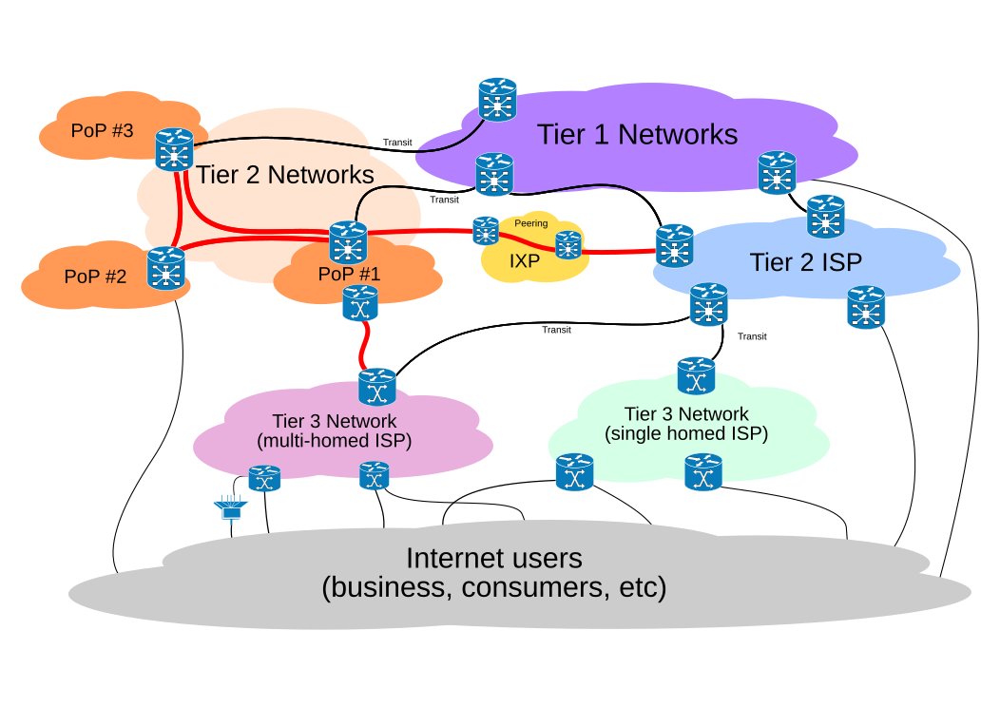

BGP2
Big Green Packets with BGP
Asbjørn, Q, Toke
RIPE Green Tech Hackathon 2024
What are jumbo frames?
- Ethernet is usually 1,5k bytes
- We can go bigger!
- Usually MTUs up to 9,0k
Why bigger packets?
- Efficiency!
- Less forwarding overhead
- Green Internet
Jumbo frames on IXPs
- Traditionally required a flag day
- What if we can deploy this incrementally?
Support for this
There are 124 Internet exchanges with 9K MTU they are spread out over 508 datacenters in 245 cities across 61 countries (source: PeeringDB).
There are currently 3024 ASN's connected to the 124 high MTU internet exchanges.
asn | name | 9k_mtu_ix_cnt
--------+-----------------------------------+---------------
6939 | Hurricane Electric | 46
13335 | Cloudflare | 42
42 | PCH AS42 | 34
3856 | PCH AS3856 | 33
32934 | Meta | 28
15169 | Google LLC | 27
20940 | Akamai Technologies | 20
112 | DNS-OARC-112 | 20
16509 | Amazon.com | 19
8075 | Microsoft | 19
199524 | G-Core Labs | 18
26415 | VeriSign Global Registry Services | 14
8674 | Netnod | 13
54113 | Fastly, Inc. | 12
48648 | K-Link AS48648 | 11
3303 | Swisscom | 11
32590 | Valve Corporation | 11
212232 | BGP.Tools Route Collector | 11
54994 | meteversecloud | 10
6768 | EUROTELE-PLUS | 10

What did we do?
- Start on an I-D for MTU signalling in BGP
- Implement this in BIRD
- Start of Babel implementation in BIRD
New BGP capability
0 1
0 1 2 3 4 5 6 7 8 9 0 1 2 3 4 5
+-+-+-+-+-+-+-+-+-+-+-+-+-+-+-+-+
|fl.| Link MTU |
+-+-+-+-+-+-+-+-+-+-+-+-+-+-+-+-+
Flags are reserved for future use and MUST be 0
New BGP attribute
Type flags: optional, non-transitive, complete
0 1 2 3
0 1 2 3 4 5 6 7 8 9 0 1 2 3 4 5 6 7 8 9 0 1 2 3 4 5 6 7 8 9 0 1
+-+-+-+-+-+-+-+-+-+-+-+-+-+-+-+-+-+-+-+-+-+-+-+-+-+-+-+-+-+-+-+-+
| Origin ASN |
+-+-+-+-+-+-+-+-+-+-+-+-+-+-+-+-+-+-+-+-+-+-+-+-+-+-+-+-+-+-+-+-+
|fl.| Path MTU |
+-+-+-+-+-+-+-+-+-+-+-+-+-+-+-+-+
Flags are reserved for future use and MUST be 0
Code in action
BGP state: Established
Neighbor address: 10.211.55.6
Neighbor AS: 65000
Local AS: 65001
Neighbor ID: 10.211.55.6
Local capabilities
Multiprotocol
AF announced: ipv4
Route refresh
Graceful restart
4-octet AS numbers
Enhanced refresh
Long-lived graceful restart
MTU: 9000
Neighbor capabilities
Multiprotocol
AF announced: ipv4
Route refresh
Graceful restart
4-octet AS numbers
Enhanced refresh
Long-lived graceful restart
MTU: 9000
2: enp0s5: <BROADCAST,MULTICAST,UP,LOWER_UP> mtu 9000 qdisc fq_codel state UP mode DEFAULT group default qlen 1000
link/ether 00:1c:42:7a:0e:27 brd ff:ff:ff:ff:ff:ff
44.31.105.50 via 10.211.55.1 dev enp0s5 mtu 1500
44.31.105.51 via 10.211.55.1 dev enp0s5
AS #1
# birdc s r all
BIRD v2.16-5-gcfac0076-x ready.
Table master4:
44.31.105.51/32 unicast [kernel1 12:58:20.071] * (10)
via 10.211.55.1 on enp0s5
Type: inherit univ
Kernel.source: 3
Kernel.metric: 0
Kernel.mtu: 9000
44.31.105.50/32 unicast [kernel1 14:10:59.532] * (10)
via 10.211.55.1 on enp0s5
Type: inherit univ
Kernel.source: 3
Kernel.metric: 0
Kernel.mtu: 1500
AS #2
# birdc s r all
BIRD v2.16-5-gcfac0076-x ready.
Table master4:
44.31.105.51/32 unicast [peer 13:31:41.451 from 10.211.55.6] * (100) [AS65000i MTU 9000]
via 10.211.55.1 on enp0s5
Type: BGP univ
BGP.origin: IGP
BGP.as_path: 65000
BGP.next_hop: 10.211.55.1
BGP.local_pref: 100
BGP.mtu: 9000 (origin AS65000)
44.31.105.50/32 unicast [peer 14:10:59.521 from 10.211.55.6] * (100) [AS65000i MTU 1500]
via 10.211.55.1 on enp0s5
Type: BGP univ
BGP.origin: IGP
BGP.as_path: 65000
BGP.next_hop: 10.211.55.1
BGP.local_pref: 100
BGP.mtu: 1500 (origin AS65000)
 TheEnbyperor / bird
TheEnbyperor / bird
TODO
- Finish writing the I-D
- Implement places other than Bird
- ???
- Profit!
Thank you! Questions?
Slides at magicalcodewit.ch/green-tech-hackathon-2024-slides/